vignettes/case_study_1_measles.Rmd
case_study_1_measles.RmdHere, we will use the serosim package to generate a longitudinal serological survey of a one pathogen system with vaccination and natural infection. The overall structure and principles discussed within this case study are also applicable to other vaccine preventable pathogens. In this simulation, individuals can either be vaccinated against the pathogen, naturally infected with the pathogen, a combination of both or neither. We will set up each of the required arguments and models for runserosim in the order outlined in the methods section of the paper.
This case study is built around measles and we are interested in tracking measles vaccination and infection across a 10 year period. We will conduct a longitudinal serological survey with two sampling times where we will use an ELISA kit to measure an individual’s measles IgG titer. In this example, biomarker quantity, titer level and antibody level all mean the same thing.
We will use previously conducted measles serological surveys and any well characterized epidemiological and immunological characteristics of measles to parameterize our models wherever possible and make reasonable assumptions for other required model parameters wherever information is lacking.
We narrowed our search to measles serological surveys conducted with the Enzygnost ELISA IgG test kits and utilized a measles serology review to select a few studies of relevance (Thompson and Odahowski 2016). We did not conduct an extensive search of all measles serological surveys in order to parameterize our models as it is beyond the scope of this case study. Our aim was to provide a simple example of how users can use the literature to inform required serosim inputs. Within each section below, we will briefly explain the rationale behind our selected model inputs. We caution users to conduct their own research into the models and associated parameters which best align with their disease system and biomarker test kits.
Load necessary packages:
## Install and load serosim
## devtools::install_github("AMenezes97/serosim")
library(serosim)
## Load additional packages required
library(tidyverse)
library(data.table)
library(ggplot2)
library(patchwork)
library(reshape2)We will simulate monthly time steps across a 10 year period. Therefore, we will have 120 time steps. Note that these are arbitrary time steps which will need to be scaled to the right time resolution to match any time-based parameters used later on.
For this case study, we are not interested in tracking any demography information but we are interested in tracking individual’s birth time. We will use the generate_pop_demography function to create the demography tibble needed for runserosim .
Note: The runserosim function, called later on, only requires a demography tibble with two columns (individuals and times).
## Specify the number of individuals in the simulation
N<-100
## Generate the population demography tibble
## See help file(?generate_pop_demography) for more information on function arguments.
## age_min is set to 0 which allows births to occur until the last time step
## Let's assume that no individuals are removed from the population and set prob_removal to 0
demography <- generate_pop_demography(N, times, age_min=0, prob_removal=0)## Joining with `by = join_by(i)`
## Examine the generated demography tibble
summary(demography)## i birth removal times
## Min. : 1.00 Min. : 2.00 Min. :121 Min. : 1.00
## 1st Qu.: 25.75 1st Qu.: 30.00 1st Qu.:121 1st Qu.: 30.75
## Median : 50.50 Median : 62.00 Median :121 Median : 60.50
## Mean : 50.50 Mean : 60.31 Mean :121 Mean : 60.50
## 3rd Qu.: 75.25 3rd Qu.: 93.00 3rd Qu.:121 3rd Qu.: 90.25
## Max. :100.00 Max. :118.00 Max. :121 Max. :120.00Now, we have to set up the exposure IDs and biomarker IDs for our desired simulation. Individuals can be seropositive either by measles natural infection or by vaccination and we want to track both exposure types separately. Here, we will simulate measles natural infection (exposure_ID=measles_ifxn) and measles vaccination (exposure_ID=measles_vacc) both of which will boost the same biomarker, IgG antibodies (biomarker_ID=measles_IgG). Since we are only interested in tracking measles IgG antibody levels across time, we only need one biomarker ID. runserosim requires that exposure_id and biomarker_id are numeric so we will use the reformat_biomarker_map function to create a new version of the biomarker map. Users can go directly to numeric biomarker_map if they wish.
Note that the reformat_biomarker_map function will number the exposures and biomarkers in alphabetical order so that the first exposure event or biomarker that is listed will not necessarily be labeled as 1.
## Create biomarker map
biomarker_map_original <- tibble(exposure_id=c("measles_ifxn","measles_vacc"),biomarker_id=c("measles_IgG","measles_IgG"))
biomarker_map_original## # A tibble: 2 × 2
## exposure_id biomarker_id
## <chr> <chr>
## 1 measles_ifxn measles_IgG
## 2 measles_vacc measles_IgG
## Reformat biomarker_map for runserosim
biomarker_map <-reformat_biomarker_map(biomarker_map_original)
biomarker_map## # A tibble: 2 × 2
## exposure_id biomarker_id
## <dbl> <dbl>
## 1 1 1
## 2 2 1Now, we need to specify the foe_pars argument which contains the force of exposure for all exposure_IDs across all time steps and groups. We also specify the exposure model which will be called within runserosim later. The exposure model will determine the probability that an individual is exposed to a specific exposure event.
Since we did not specify different groups within demography, all individuals will automatically be assigned group 1. Therefore, we only need 1 row for dimension 1 in foe_pars. Dimension 3 of the foe_array must be in the same order as the exposure_id within the biomarker map. For example, the force of exposure for exposure_id 1 will be inputted within the foe_pars[,,1].
We specified the same force of exposure for all time steps within foe_pars for simplicity but users will likely have varying numbers to match real world settings.
## Create an empty array to store the force of exposure for all exposure types
## Dimension 1: Group
## Dimension 2: Times
## Dimension 3: Exposure ID
foe_pars <- array(0, dim=c(1,max(times),n_distinct(biomarker_map$exposure_id)))
## Specify the force of exposure for exposure ID 1 which represents measles natural infection
foe_pars[,,1] <- 0.02
## Specify the force of exposure for exposure ID 2 which represents measles vaccination
foe_pars[,,2] <- 0.04
## Specify a simple exposure model which calculates the probability of exposure directly from the force of exposure at that time step
exposure_model<-exposure_model_simple_FOE
## In this selected model, the probability of exposure is 1-exp(-FOE) where FOE is the force of exposure at that time.
## Examine the probability of exposure over time for the specified exposure model
plot_exposure_model(exposure_mode=exposure_model_simple_FOE, times=times, n_groups = 1, n_exposures = 2, foe_pars=foe_pars)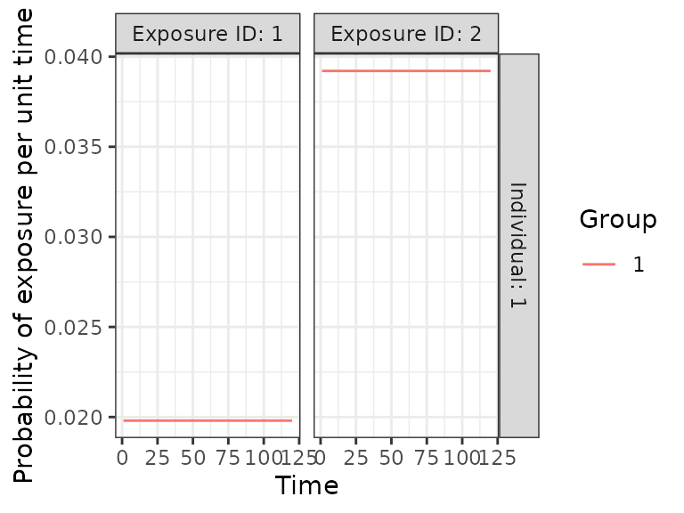
Here, we specify the immunity model which will determine the probability that an exposure event is successful in producing an immunological response. Since we have both vaccination and natural infection events, we will use immunity_model_vacc_ifxn_biomarker_prot. With this immunity model, the probability of successful measles vaccination exposure depends on the number of measles vaccines received prior to time t and the individual’s age at time t while the probability of successful measles infection is dependent on the biomarker quantity, in this case antibody titer, at the time of exposure and an individual’s total number of measles infections.
Since measles is a fully immunizing pathogen, we have assumed that individuals can only be infected once. Therefore, we have disregarded any complexities brought on by boosting events from additional measles exposure. This assumption can be loosened by removing the limit on infection events.
Within this selected immunity model, individuals can become infected despite prior vaccination if their current biomarker quantity is below the threshold of protection as a result of waning or incomplete immunity following vaccination. The biomarker quantity mediated protection parameters (also known as titer-mediated protection) used within this immunity model are defined within model_pars which will be loaded in section 1.6.
The Enzygnost ELISA kit reports that the threshold of seropositivity is 200 mIU/ml and we have used this titer value to inform our titer-mediated protection curve. In our simulation, individuals with titers below 200 mIU/ml will have a higher probability of becoming infected when exposed to measles while individuals with titers above 200 mIU/ml are more likely to be protected from infection. It is important to note that, seropositivty and titer level is not a perfect correlate of protection against infection as it does not directly account for neutralizing titers, cellular immunity and other immunological complexities. With a more in-depth literature review on correlates of protection, we expect users will be able to select better titer-mediated protection parameters than our crude estimates.
## Specify immunity model within runserosim function below
immunity_model<-immunity_model_vacc_ifxn_biomarker_prot
## This immunity model requires 3 additional arguments specified below.
## Specify which exposure IDs represent vaccination events
vacc_exposures<-2
## Specify the age at which an individual is eligible for measles vaccination (9 months old); note non vaccine exposures are listed as NAs
vacc_age<-c(NA,9)
## Specify the maximum number of successful exposure events an individual can receive for each exposure type
## For this example, we are assuming that there is only one dose of the measles vaccine and one possible measles infection
max_events<-c(1,1)
## Plot biomarker-mediated protection curve (also known as titer-mediated protection) given parameters specified within model_pars for biomarker 1 (measles_IgG) which will be loaded in section 1.6
plot_biomarker_mediated_protection(0:1000, biomarker_prot_midpoint=200, biomarker_prot_width=1)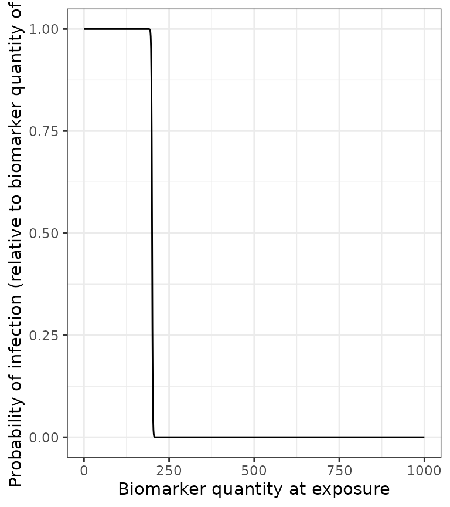
Now, we specify the antibody model to be used within runserosim to track antibody kinetics, or more broadly biomarker kinetics for each biomarker produced from successful exposure events.
We will be using a biphasic boosting-waning model. This model assumes that for each exposure there is a set of long-term boost, long-term boost waning, short-term boost, and short-term boost waning parameters. Given varying measles antibody dynamics observed in early and late life, we decided that a biphasic boosting-waning model was appropriate for our purposes (Carryn et al. 2019; Amanna, Carlson, and Slifka 2007).
The antibody kinetics parameters needed for the antibody model are pre-loaded within a csv file which will take on the argument name: model_pars. Users can edit the csv file to modify any parameters. runserosim requires that exposure_id and biomarker_id are numeric within model_pars so we will use the reformat_biomarker_map function again to create a new version of model_pars. Users can go directly to numeric model_pars if they wish.
We selected a few measles serological surveys conducted with the Enzygnost ELISA IgG test kits which measured titers following vaccination to inform the vaccine induced boost and waning parameters. From the reported quantitative measles IgG titers following vaccination, we picked the conservative range of 2500-4500 mIU/mL for vaccine acquired full boost. After 10 years, only the long-term boost remains which ranges from 900-2000 mIU/mL. Therefore, the short-term boost ranges from 1600-2500 mIU/mL (Berry et al. 2017; Lyamuya et al. 1999; Carryn et al. 2019; Trevisan et al. 2021). Since we are only simulating a 10 year period, we assumed that there was minimal waning of the long-term boost for simplicity.
Although there is evidence that titers following measles infection are significantly higher than after vaccination when measured with PRNT assays (Anichini et al. 2020), we were unable to find studies that reported titer kinetics following known infection events using Enzygnost ELISA IgG test kits. For simplicity, we will assume that natural infection boosting parameters are 25% higher than vaccine induced antibody boosting when measured with Enzygnost ELISA IgG test kits which does not distinguish between neutralizing and non-neutralizing titers.
Lastly, we define the draw_parameters function which determines how each individual’s antibody kinetics parameters are simulated from the within-host processes parameters tibble (model_pars). We will use a function which draws parameters directly from model_pars for the antibody model with random effects to represent individual heterogeneity in immunological responses. Parameters are drawn randomly from a distribution with mean and standard deviation specified within model_pars. This draw_parameters function also incorporates biomarker quantitiy dependent boosting (also known as titer-dependent boosting) where an individual’s realized boost is dependent on their titer level at the time of the exposure event.
There is contradictory evidence of whether there is a significant boost after vaccinated individuals receive another measles vaccine (Christenson and Böttiger 1994; Trevisan et al. 2021; Sasaki et al. 2019). For simplicity, we have assumed that individuals in this simulation are only eligible for one dose of the measles vaccine so we can ignore multiple vaccination events.
Lastly, it has been reported that there is no significant boost in titers with re-vaccination of children with naturally acquired immunity (Christenson and Böttiger 1994). With this draw parameters function, we incorporated titer-dependent boosting which will take into account an individual’s current titer and adjust their realized boost accordingly. We arbitrarily set the titer-dependent boosting effects following an additional successful exposure event for individuals above 200 mIU/mL to be only 10% of the full boost.
Given all of our specified parameters and models, individuals in the simulation can only be vaccinated once and naturally infected once. If an individual in vaccinated and their titers are below the threshold of protection they run the risk of experiencing a natural infection where their titers will receive a partial boost. Given the short duration (10 years) of this simulation and the vaccine associated antibody kinetics parameters, it is unlikely that any individual who is vaccinated and successfully immunized will reach a titer level that puts them at risk of infection. If an individual is vaccinated following a natural infection event, then they will also receive a partial boost.
## Specify the antibody model
antibody_model<-antibody_model_biphasic
## Bring in the antibody parameters needed for the antibody model
## Note that the titer-mediated protection parameters needed for the immunity model (Section 1.5), the titer-ceiling parameters needed for draw_parameters and the observation error parameter needed for the observation model (Section 1.7) are all defined here too.
model_pars_path <- system.file("extdata", "model_pars_cs1.csv", package = "serosim")
model_pars_original <- read.csv(file = model_pars_path, header = TRUE)
model_pars_original ## exposure_id biomarker_id name mean sd
## 1 measles_ifxn measles_IgG boost_long 1812.50000 5.5e+02
## 2 measles_ifxn measles_IgG boost_short 2562.50000 4.5e+02
## 3 measles_ifxn measles_IgG wane_long 0.00083 5.0e-05
## 4 measles_ifxn measles_IgG wane_short 0.00830 5.0e-04
## 5 measles_ifxn measles_IgG biomarker_ceiling_threshold 200.00000 NA
## 6 measles_ifxn measles_IgG biomarker_ceiling_gradient 0.00450 NA
## 7 measles_ifxn measles_IgG biomarker_prot_midpoint 200.00000 NA
## 8 measles_ifxn measles_IgG biomarker_prot_width 1.00000 NA
## 9 <NA> measles_IgG obs_sd NA 1.0e+02
## 10 measles_vacc measles_IgG boost_long 1450.00000 5.5e+02
## 11 measles_vacc measles_IgG boost_short 2050.00000 4.5e+02
## 12 measles_vacc measles_IgG wane_long 0.00083 5.0e-05
## 13 measles_vacc measles_IgG wane_short 0.00830 5.0e-04
## 14 measles_vacc measles_IgG biomarker_ceiling_threshold 1000.00000 NA
## 15 measles_vacc measles_IgG biomarker_ceiling_gradient 0.00090 NA
## distribution
## 1 log-normal
## 2 log-normal
## 3 log-normal
## 4 log-normal
## 5
## 6
## 7
## 8
## 9 normal
## 10 log-normal
## 11 log-normal
## 12 log-normal
## 13 log-normal
## 14
## 15
## Reformat model_pars for runserosim
model_pars<-reformat_biomarker_map(model_pars_original)
model_pars## exposure_id biomarker_id name mean sd
## 1 1 1 boost_long 1812.50000 5.5e+02
## 2 1 1 boost_short 2562.50000 4.5e+02
## 3 1 1 wane_long 0.00083 5.0e-05
## 4 1 1 wane_short 0.00830 5.0e-04
## 5 1 1 biomarker_ceiling_threshold 200.00000 NA
## 6 1 1 biomarker_ceiling_gradient 0.00450 NA
## 7 1 1 biomarker_prot_midpoint 200.00000 NA
## 8 1 1 biomarker_prot_width 1.00000 NA
## 9 NA 1 obs_sd NA 1.0e+02
## 10 2 1 boost_long 1450.00000 5.5e+02
## 11 2 1 boost_short 2050.00000 4.5e+02
## 12 2 1 wane_long 0.00083 5.0e-05
## 13 2 1 wane_short 0.00830 5.0e-04
## 14 2 1 biomarker_ceiling_threshold 1000.00000 NA
## 15 2 1 biomarker_ceiling_gradient 0.00090 NA
## distribution
## 1 log-normal
## 2 log-normal
## 3 log-normal
## 4 log-normal
## 5
## 6
## 7
## 8
## 9 normal
## 10 log-normal
## 11 log-normal
## 12 log-normal
## 13 log-normal
## 14
## 15
## Specify the draw_parameters function to use
draw_parameters<-draw_parameters_random_fx_biomarker_dep
## Plot biomarker dependent boosting effects given parameters specified within model_pars for biomarker 1 (measles_IgG)
plot_biomarker_dependent_boosting(start=0, end=1000, by=1, biomarker_ceiling_threshold=200, biomarker_ceiling_gradient=.0045)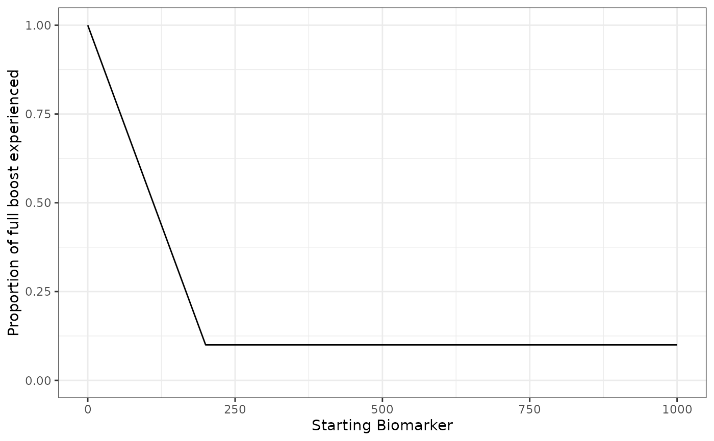
## These parameters indicate that any individual with a titer level above 200 mIU/mL at the time of a second exposure event will only receive 10% of the regular boosting parameter for that event. Individuals with a measles titer of 0 will receive the full boost.
## Plot example biomarker trajectories given the specified antibody kinetics model, model parameters and draw parameters function
plot_antibody_model(antibody_model_biphasic, N=100, model_pars=model_pars,draw_parameters_fn = draw_parameters_random_fx_biomarker_dep, biomarker_map=biomarker_map)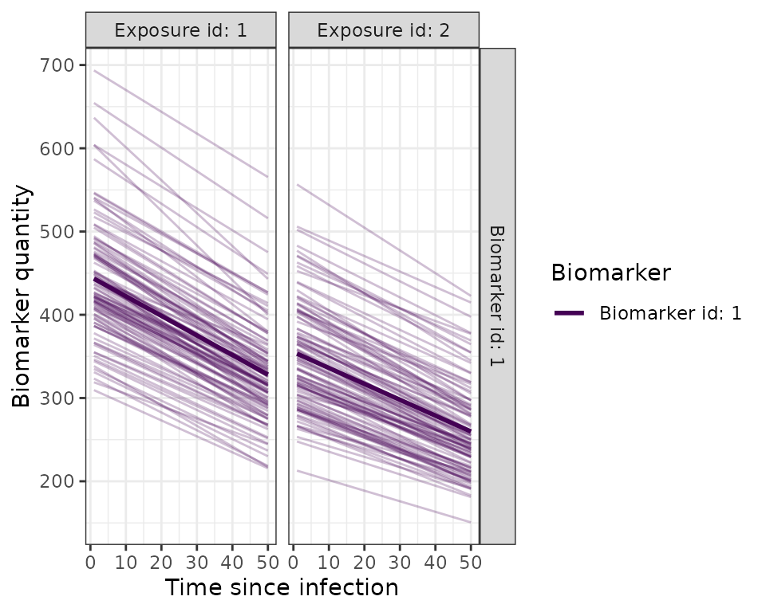
Now we specify how observed biomarker quantities, in this case antibody titers, are generated as a probabilistic function of the true, latent biomarker quantities, and when to observe these quantities. In this step, users are specifying the sampling design and assay choice for their serological survey.
We will take paired samples of all individuals alive at the midpoint (t=60) and end of the simulation (t=120). Our selected observation model observes the latent titer values given a continuous assay with user-specified lower and upper limits and added noise. Enzygnost ELISA measles IgG kits’ lower limit of detection is 100 mIU/mL with no reported upper limit. The added noise represents assay variability and is implemented by sampling from a distribution with the true latent antibody titer as the mean and the measurement error as the standard deviation. The observation standard deviation and distribution are defined within model_pars as the “obs_sd” parameter. Within this observation model, we can also specify the assay sensitivity and specificity. The Enzygnost ELISA IgG test kit has a reported 99.6% sensitivity and a 100% specificity as reported by the manufacturer.
## Specify the limits of detection for each biomarker for the continuous assays
bounds<-tibble(biomarker_id=c(1,1),name=c("lower_bound","upper_bound"),value=c(100,Inf))
## Specify the observation model
observation_model<-observation_model_continuous_bounded_noise
## Specify assay sensitivity and specificity needed for the observation model
sensitivity<-0.996
specificity<-1
## Specify observation_times (serological survey sampling design) to observe biomarker 1 (measles IgG antibody titer) across all individuals at the midpoint and the end of the simulation (t=60 and t=120)
obs1 <- tibble(i=1:N,t=60, b=1)
obs2 <- tibble(i=1:N,t=120, b=1)
observation_times<-rbind(obs1,obs2)Users can specify any additional arguments needed for their models. Here, we specify an optional argument to print an message to update us on the progress of the simulation.
## If VERBOSE is specified within runserosim, there will be an update message printed for every multiple of the integer specified.
## Print a message for every 10 individuals
VERBOSE<-10This is the core simulation where all simulation settings, models and parameters are specified within the main simulation function. The run time for this step varies depending on the number of individuals and the complexities of the specified models. There is a built in pre-computation step within runserosim where the simulation attempts to perform as much pre-computation as possible for the exposure model to speed up the main simulation code. Users can turn off this pre-computation by setting pre-computation to FALSE within runserosim.
## Run the core simulation and save outputs in "res"
res<- runserosim(
simulation_settings,
demography,
observation_times,
foe_pars,
biomarker_map,
model_pars,
exposure_model,
immunity_model,
antibody_model,
observation_model,
draw_parameters,
## Specify other arguments needed
VERBOSE=VERBOSE,
bounds=bounds,
max_events=max_events,
vacc_exposures=vacc_exposures,
vacc_age=vacc_age,
sensitivity=sensitivity,
specificity=specificity
)## Checking for possible pre-computation to save time...
## Run time can be reduced by pre-computation! Pre-computation would require a maximum of 361 calls to exposure_model as opposed to 24000
## Checking if exposure model can be vectorized...
## Solving the model for one individual without vectorization would take: 0.0005745888 seconds
## Solving the model for one individual with vectorization would take: 3.218651e-05 seconds
## Exposure model can be vectorized!
## Precomputing exposure probabilities...
## Using pre-computed exposure probabilities
## Beginning simulation
## Individual: 10
## Individual: 20
## Individual: 30
## Individual: 40
## Individual: 50
## Individual: 60
## Individual: 70
## Individual: 80
## Individual: 90
## Individual: 100
## Simulation complete! Cleaning up...
## Note that models and arguments specified earlier in the code can be specified directly within this function.Now that the simulation is complete, let’s plot and examine the simulation outputs.
## Plot biomarker kinetics and exposure histories for 10 individuals
plot_subset_individuals_history(res$biomarker_states, res$exposure_histories_long, subset=10, demography)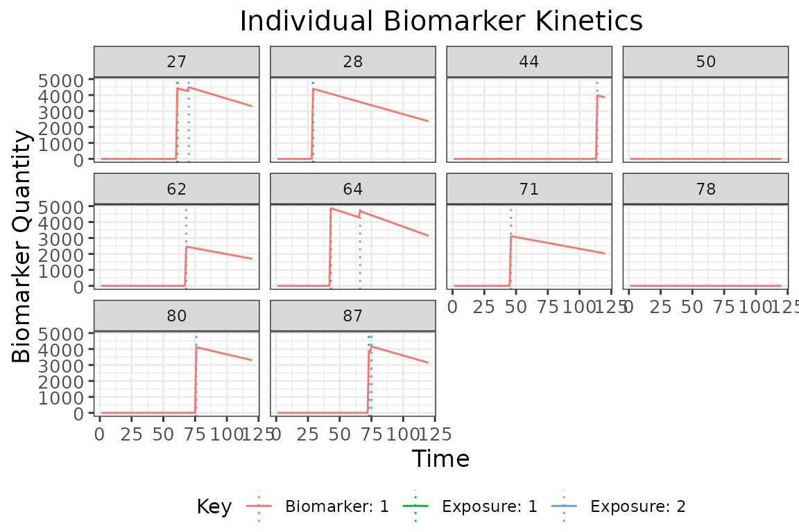
## Plot individual probability of exposure for all exposure types.
## This is the output of the exposure model.
## Note: All individuals are under the same force of exposure since we specified a simple exposure model and constant foe_pars
plot_exposure_force(res$exposure_force_long)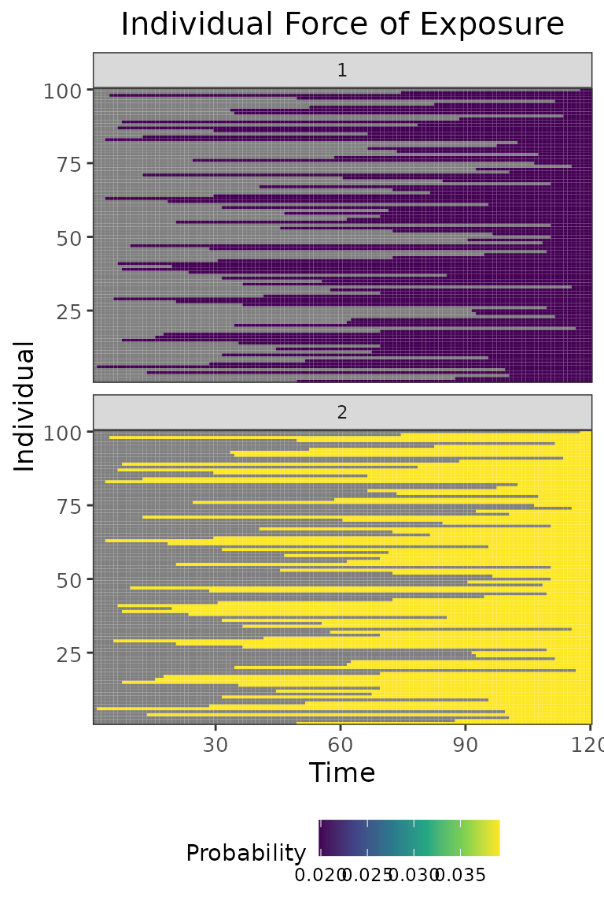
## Plot individual successful exposure probabilities for all exposure types
## This is the output of the exposure model multiplied by the output of the immunity model.
## In other words, this is the probability of exposure event being successful and inducing an immunological response
plot_exposure_prob(res$exposure_probabilities_long)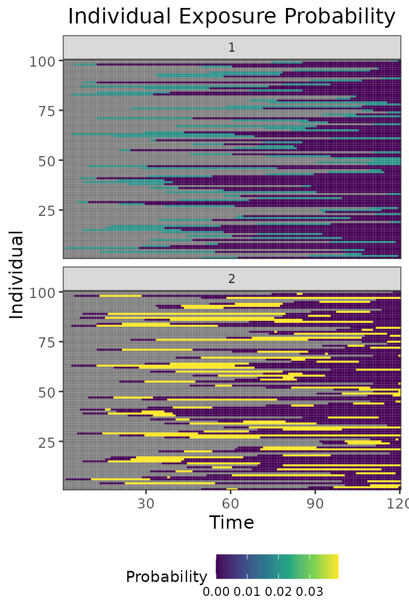
## Plot individual exposure histories for all exposure types
plot_exposure_histories(res$exposure_histories_long)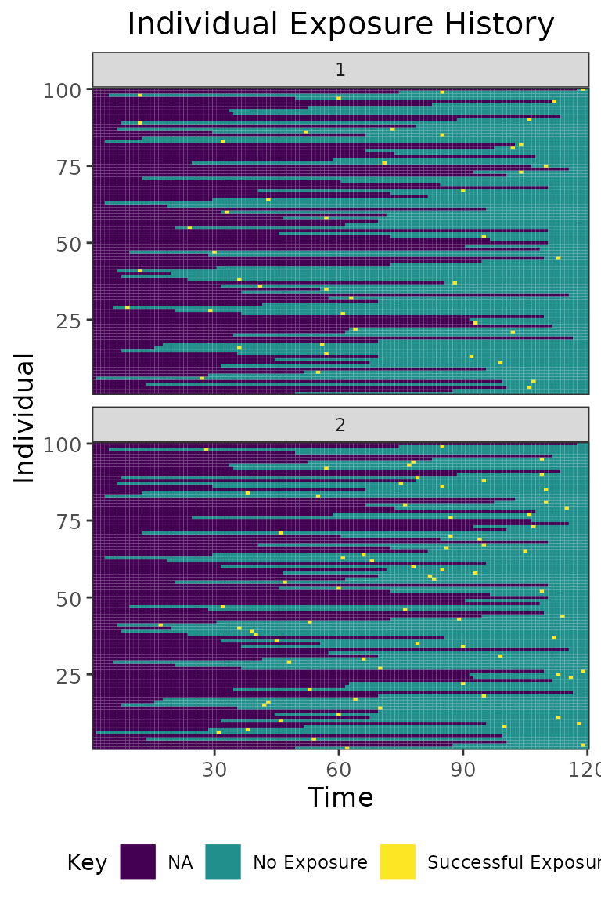
## Plot true biomarker quantities for all individuals across the entire simulation period
plot_biomarker_quantity(res$biomarker_states)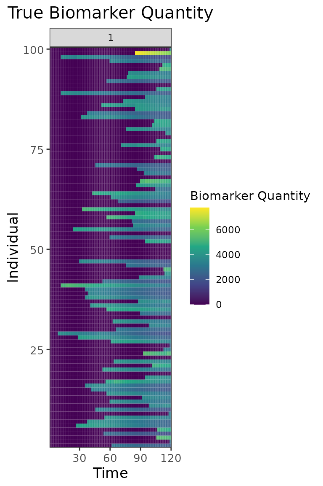
## Plot the serosurvey results (observed biomarker quantities) at time 60
obs60<-res$observed_biomarker_states %>% filter(t==60)
plot_obs_biomarkers_one_sample(obs60)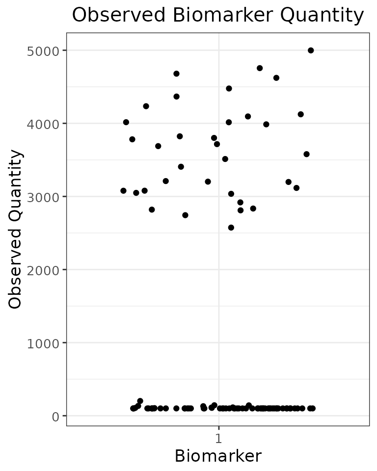
## Plot the serosurvey results (observed biomarker quantities) at time 120
obs120<-res$observed_biomarker_states %>% filter(t==120)
plot_obs_biomarkers_one_sample(obs120)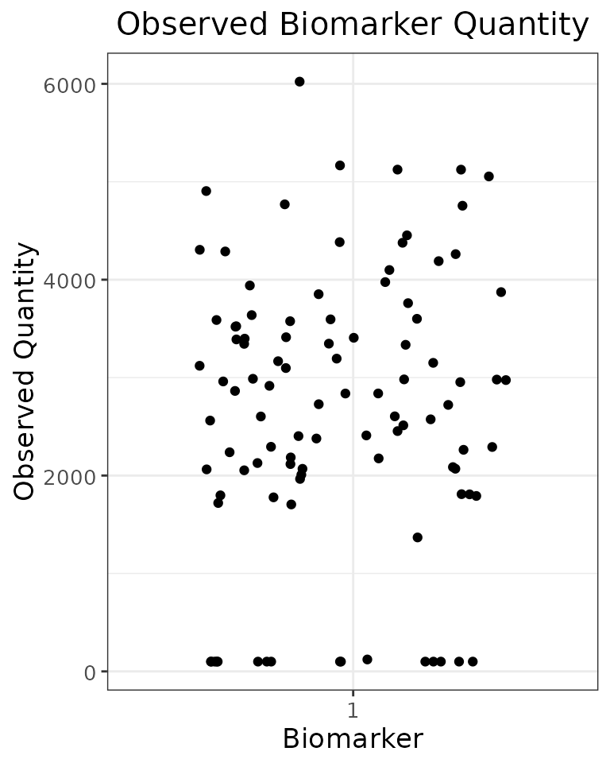
## Plot both serosurveys paired samples
plot_obs_biomarkers_paired_sample(res$observed_biomarker_states)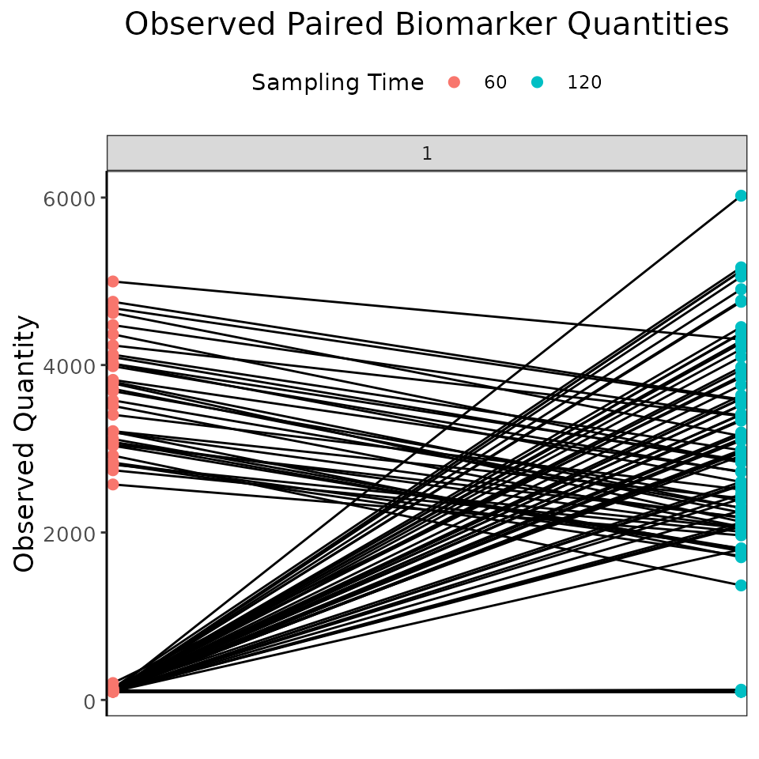
## Note that the simulated kinetics parameters are also stored
head(res$kinetics_parameters)## # A tibble: 6 × 7
## i t x b name value realized_value
## <int> <dbl> <dbl> <dbl> <chr> <dbl> <dbl>
## 1 1 62 2 1 boost_long 1527. 1527.
## 2 1 62 2 1 boost_short 1464. 1464.
## 3 1 62 2 1 wane_long 0.000845 0.000845
## 4 1 62 2 1 wane_short 0.00815 0.00815
## 5 1 62 2 1 biomarker_ceiling_threshold 1000 1000
## 6 1 62 2 1 biomarker_ceiling_gradient 0.0009 0.0009